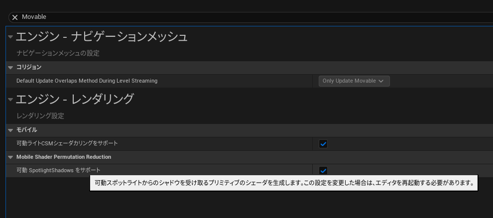

<main class="container"> <center>
   <h1>2025/08/11-UE5.6-問題：VRプレビューで影が表示されない</h1>
  </center>

  <section>
   <h2>問題</h2>
   <p>
    エディタのビューポートでは表示される影が、Quest3Sだと表示されない。
   </p>
  </section>

  <section>
   <h2>解決</h2>
   <div class="image-container">
    
    <div class="text">
     プロジェクト設定でエンジン-レンダリングのモバイルセクションにある「可動SpotlightShadowsをサポート」のチェックボックスをTrueにする。
    </div>
   </div>
  </section>
</main>